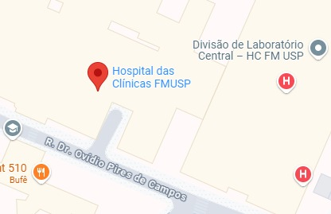

Assistente Virtual HC — Lembrete e Acesso Fácil à Saúde
Plataforma para pacientes visualizarem informações das consultas. Que envia lembretes de consulta via WhatsApp, com confirmação fácil e orientações simples para acessar a teleconsulta.
Hospital das Clínicas FMUSP
O Hospital das Clínicas da Faculdade de Medicina da Universidade de São Paulo é um complexo de instituições de saúde, localizado em várias regiões da cidade de São Paulo, Brasil.
Av. Dr. Enéas de Carvalho Aguiar, 225 Cerqueira César São Paulo

Como chegarBenefícios Assistente Virtual HC
Lembretes automáticos de consulta
Confirmação pelo WhatsApp
Acesso simples para idosos
Ajuda com teleconsultas